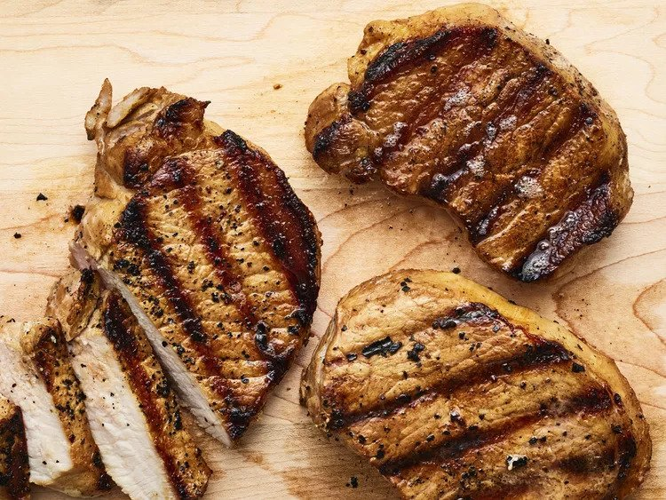

Grilled Pork Chops

Easy to prepare with a simple marinade and cooks fast on the grill
With only a few ingredients these pork chops are both delicious and easy to put together with ingredients likely already in the kitchen.
It is a prep that can be put together in less than 5 minutes and cooked just as fast depending on how long you let it marinate.
Ingredients
- 1/2 cup water
- 1/3 cup soy sauce
- 1/4 cup vegetable oil
- 3 tbsp lemon pepper seasoning
- 2 tsp minced garlic
- 6 pork loin chops
Steps
- Mix water, soy sauce, vegetable oil, lemon pepper seasoning, and garlic in bowl or bag, coat the pork chops thorougly and marinate 1-2 hours.
- Preheat grill to a medium-high heat of at least 350 degrees F.
- Grill pork chops until no longer pink with an internal temperature of at least 145 degrees F (about 5-6 minutes per side)
- Serve hot and enjoy.